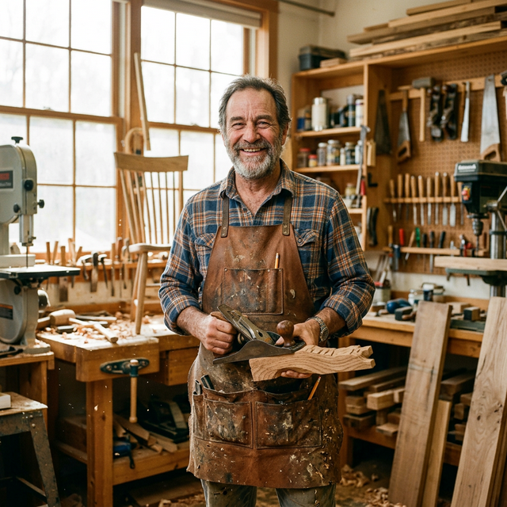
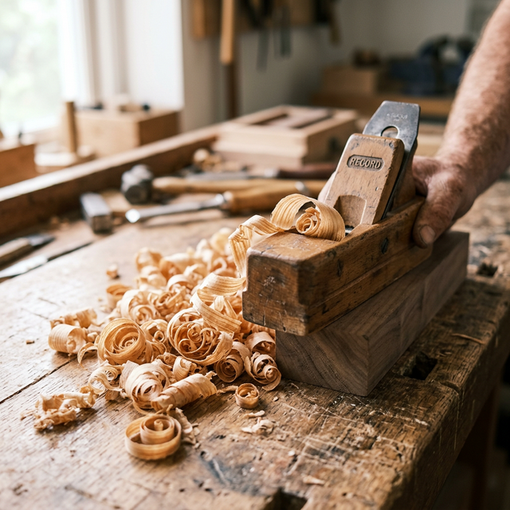
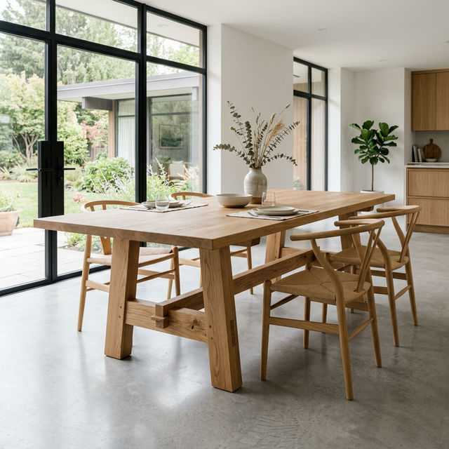
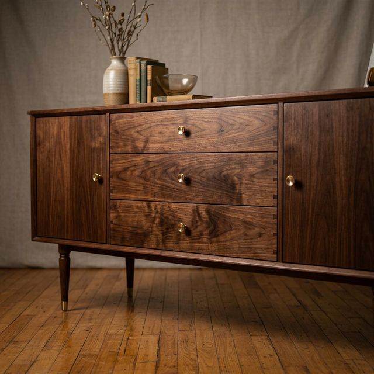

The hand that holds the chisel, the eye that sees the grain.

Born from Dust & Dedication
GrainCraft was founded in 2009 by Elias Thorne, a third-generation woodworker with a passion for preserving the unhurried methods of the past. What started as a small workshop in a Portland garage has evolved into a premier studio known for bespoke heirloom pieces.
We believe that furniture should be lived in, not just looked at. Every piece we create is designed to become a witness to family history, gaining character and soul as the decades pass.
"I don't impose a design on the wood. I listen to what the branch or the plank wants to be."
Values that Guide the Chisel
Honest Materials
We work exclusively with sustainable hardwoods, hand-selecting each piece of timber for its grain pattern, stability, and character.
Generational Quality
Our joinery is built to last centuries, not seasons. We use traditional techniques that allow the wood to breathe and move naturally.
Direct Connection
When you commission a piece, you work directly with the maker. No middle-men, just a shared journey from sketch to finish.



